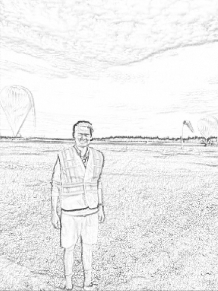

Terry's Projects
Welcome to my website! It is here that I wish to document publicly some of my projects. Most of them are related to radio, and some of which are from school.

About Me
I am an Electrical Engineering student passionate about wireless technology, particularly with applications in communications and natural science. In the one of the summers during my undergraduate career, I worked alongside brilliant researchers and fellow undergraduate students to help construct a balloon-borne VLBI station. That job was my first taste of real engineering, much more than what the textbooks and classes offered at the time. After spending some time designing and building electronics, especially since my internship as a RF hardware developer at a large telematics company, it has come to my realization that there is no better way to learn than to be practical. As such, this site is to document the failures, progress, and solutions in some selected projects.
About This Site
For a while I have always wanted to find a way to showcase some of my amateur projects. While the regular GitHub repositories host some technical files, it is a bit cumbersome jump between pages for a quick gallery and to get a sense of what I have been working on. This page serves as a documentation for myself as well as anyone interested in my work (hello potential employer). This is also a good place to write down some more technical thoughts and decisions, and make some connections between all the projects.
More updates will be made to this site as I organize and migrate my files. I am also hoping to move the content of my Linkedin page here, in the spirit of accessibility. This will serve as the primary documentation for my electronics hobby and my academic career.